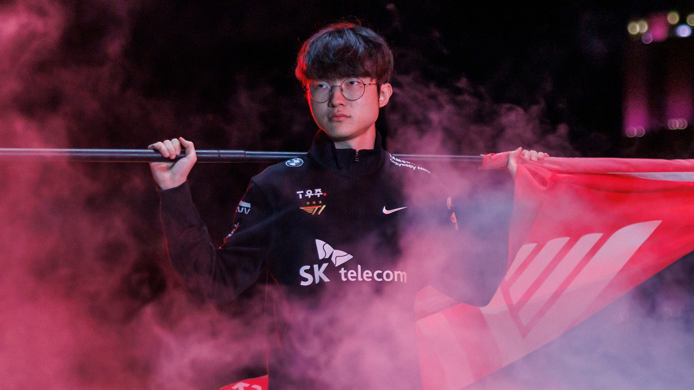

Star Player of LOL
Lee Sang-hyeok (Korean: 이상혁; born May 7, 1996), better known as Faker, is a South Korean professional League of Legends player for T1. He gained prominence after joining SK Telecom T1 (now T1) in 2013, where he has since played as the team's mid laner. Often hailed as the "Michael Jordan of esports", Faker is widely regarded as the greatest League of Legends player in history. Throughout his career, he has secured a record of 10 League of Legends Champions Korea (LCK) titles, two Mid-Season Invitational (MSI) titles, and a record four World Championship titles.
